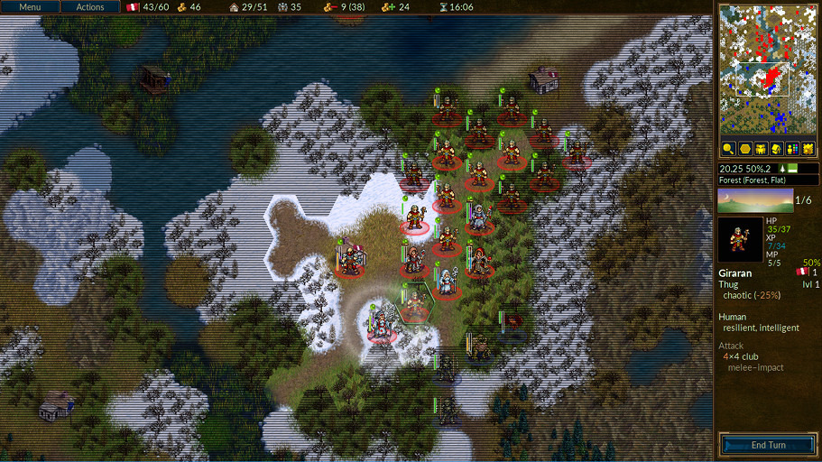

Sumari
Llistat de taules
La Batalla per Wesnoth és un joc d'estratègia per torns amb una temàtica de fantasia.
Construïu un gran exèrcit, convertint gradualment reclutes en veterans endurits. En els jocs posteriors, reincorporeu els vostres guerrers més durs i formeu un exèrcit mortal al qual ningú pugui resistir! Escolliu unitats d'un gran grup d'especialistes, i trieu una força amb els punts forts adequats per a lluitar bé en diferents terrenys contra tota mena d'oposició.
Wesnoth té moltes sagues diferents esperant ser jugades. Podeu lluitar contra els orcs, els no morts i els bandits a les zones frontereres del Regne de Wesnoth; lluitar al costat dels dracs en els alts cims, dels elfs en els extrems verds d'Aethenwood, dels nans en els grans salons de Knalga, o fins i tot dels sirènids a la badia de les perles. Podeu lluitar per a recuperar el tron de Wesnoth, utilitzar el vostre temible poder sobre els no morts per a dominar la terra dels mortals, o dirigir la vostra gloriosa tribu orca cap a la victòria contra els humans que s'atreveixin a espoliar les vostres terres.
Podreu seleccionar entre més de dos-cents tipus d'unitats (infanteria, cavalleria, arquers i mags són només el principi) i executar atacs que van des d'emboscades de petites unitats fins a enfrontaments d'enormes exèrcits. També podeu desafiar els vostres amics –o desconeguts– i lluitar en batalles de fantasia èpica multijugador.
Batalla per Wesnoth és programari de codi obert, i una pròspera comunitat de voluntaris coopera per a millorar el joc. Podeu crear les vostres pròpies unitats personalitzades, escriure els vostres propis escenaris, i fins i tot programar campanyes completes. El contingut mantingut per l'usuari està disponible en un servidor de complements, i el millor se n'incorpora a les versions oficials de Batalla per Wesnoth.
La part coneguda del Gran Continent, a la qual Wesnoth s'adhereix, se sol dividir en tres àrees: les terres del Nord, que en general no tenen llei; el regne de Wesnoth i el seu principat ocasional, Elensefar; i el domini dels elfs del sud-oest a Aethenwood i més enllà.
El Regne de Wesnoth es troba al centre d'aquesta terra. Les seves fronteres són el Riu Gran al nord, els turons Dulatus a l'est i al sud, la vora d'Aethenwood al sud-oest, i l'oceà a l'oest. Elensefar, una antiga província de Wesnoth, limita amb el Riu Gran al nord, una línia vagament definida amb Wesnoth a l'est, la badia de les Perles al sud, i l'oceà a l'oest.
Les Terres del Nord són el país salvatge al nord del Riu Gran. Diversos grups d'orcs, nans, bàrbars i elfs poblen la regió. Al nord i a l'est es troba el bosc de Lintanir, on el gran regne dels elfs del nord es tanca en els seus propis assumptes misteriosos.
Pel territori hi ha pobles dispersos on podeu guarir les tropes i cobrar els ingressos necessaris per a donar suport al vostre exèrcit. També haureu de travessar muntanyes i rius, travessar boscos, turons i tundra, i creuar pastures obertes. En cadascuna d'aquestes àrees, diferents criatures s'hi han adaptat a viure i poden viatjar més fàcilment i lluitar millor quan són en terreny familiar.
En el món de Wesnoth, hi viuen humans, elfs, nans, orcs, dracs, sauris, sirènids, nagues i moltes altres races encara més obscures i meravelloses. Per les terres maleïdes caminen no morts i fantasmes i espectres; els monstres s'allotgen en les seves ruïnes i masmorres. Cadascuna s'ha adaptat a terrenys particulars. Els humans habiten principalment les praderies temperades. Als turons, muntanyes i coves subterrànies, els orcs i els nans se senten més com a casa. Als boscos, els elfs no tenen rival. Als oceans i rius, dominen els sirènids i els naga.
Pel que fa al joc, les races s'agrupen en faccions; per exemple, els orcs sovint cooperen amb trols, i els elfs o els nans amb els humans. Algunes altres faccions reflecteixen divisions dins de la societat humana, com ara els lleialistes contra els proscrits. En la majoria de campanyes, controlareu unitats d'una sola facció. Però, de vegades, les faccions fan aliances amb altres, així que podeu enfrontar-vos a més d'una facció en un escenari.
Quan Wesnoth s'executa per primera vegada, mostra un fons inicial i una columna de botons anomenada Menú Principal. Els botons només funcionen amb un ratolí. Per als impacients, us recomanem: feu clic al botó «Idioma» per a establir la vostra llengua; després, feu clic al botó «Tutorial» per a executar el tutorial; i, després, jugueu la campanya «Una història de dos germans» fent clic al botó "Campaign" i seleccionant-la de la llista proporcionada.

- Tutorial
- El tutorial és una partida real, però bàsica, que us ensenya alguns dels controls bàsics necessaris per a jugar al joc. Guanyar o perdre no és important aquí, sinó aprendre què fer. Feu clic al botó Tutorial per a jugar-hi. En el Tutorial esteu en el paper del príncep Konrad o de la princesa Li'sar, aprenent del Vell Mag Delfador: pareu-hi atenció o podria convertir-vos en un tritó.
- Campanya
- Wesnoth va ser dissenyat principalment per a jugar campanyes. Les campanyes són una sèrie d'escenaris connectats. Cliqueu aquest botó per a iniciar una nova campanya. Se us presentarà una llista de campanyes disponibles a l'ordinador (en podeu descarregar més si voleu). Seleccioneu la vostra campanya i feu clic a D'acord per a iniciar-la o a Cancel·la per a sortir. Cada campanya té un nivell de dificultat: fàcil, mitjà (normal) i dur. Recomanem el mitjà, ja que aquest nivell és exigent, però no difícil. No podeu canviar la dificultat durant la campanya. En cas que tingueu problemes greus amb una dificultat fàcil, la guia sobre Estratègia bàsica us ajudarà. Una vegada seleccionada la dificultat, començareu amb el primer escenari de la campanya.
- Multijugador
- Cliqueu aquest botó per a jugar escenaris individuals contra un o més oponents. Podeu jugar les partides per Internet o al vostre ordinador, contra ordinadors o oponents humans. Quan seleccioneu aquest botó, apareixerà un diàleg i podreu triar com voleu jugar a l'escenari. Per a saber-ne més, vegeu escenaris.
- Carrega
- Cliqueu aquest botó per a carregar una partida desada prèviament. Se us mostrarà un diàleg que llistarà les partides desades. Seleccioneu la partida i feu clic a D'acord per a carregar-la i continuar, o a Cancel·la per a tornar al menú principal. Si seleccioneu una repetició, podeu marcar la casella de selecció «Mostra la repetició». La partida carregada farà tots els moviments des del principi mentre la mireu.
- Complements
- Feu clic en aquest botó per a entrar al servidor de continguts on s'allotja una gran quantitat de contingut creat per usuaris normals. Entre les coses disponibles hi ha moltes campanyes, eres multijugador (que defineixen les faccions de les partides multijugador) i mapes multijugador. Amb el botó «Suprimeix complements», els podeu tornar a eliminar una vegada ja no els vulgueu.
- Editor de mapes
- Feu clic en aquest botó per a iniciar l'Editor de mapes, on podeu crear mapes personalitzats per a partides multijugador o per a dissenyar-hi la vostra pròpia campanya.
- Idioma
- Feu clic en aquest botó, seleccioneu la vostra llengua i feu clic a D'acord per utilitzar-la, o a Cancel·la per a continuar amb la llengua actual. La primera vegada que s'executa Wesnoth, l'idioma per defecte és l'anglès o la vostra llengua del sistema si es pot determinar, però, una vegada que la canvieu, s'executarà en aquesta llengua.
- Preferències
- Feu clic aquí per a canviar els paràmetres per defecte.
- Crèdits
- Click this button for a list of major Wesnoth contributors. You will often be able to reach them in real time at irc.libera.chat:6667 on #wesnoth or at https://discord.gg/battleforwesnoth
- Surt
- Feu clic en aquest botó per a tancar el Wesnoth.
- Ajuda
- Feu clic en aquest botó per a obrir el sistema d'ajuda integrat al joc. Us facilitarà informació sobre les unitats i totes les altres coses rellevants del joc. La majoria d'aquestes coses es mencionen en aquest manual.
- Següent
- Feu clic en aquest botó per a llegir el consell següent del «Tom de Wesnoth».
- Anterior
- Feu clic en aquest botó per a llegir el consell anterior del «Tom de Wesnoth».
- i
- Feu clic en aquest botó per a consultar la versió del joc i informació tècnica. Pot ser útil per a resoldre problemes.
Hi ha dues maneres bàsiques de jugar al Batalla per Wesnoth:
- Jugar una seqüència d'escenaris connectats, coneguda com a campanya, contra l'ordinador.
- Jugueu un sol escenari contra l'ordinador o contra oponents humans.
També hi ha campanyes que es poden jugar en multijugador.
Les campanyes són seqüències de batalles amb una història que les connecta. Les campanyes típiques tenen sobre 10–20 escenaris. L'avantatge principal de les campanyes és que us permeten desenvolupar el vostre exèrcit. A mesura que acabeu cada escenari, les unitats restants es desen per a usar-les a l'escenari següent. Si escolliu no utilitzar una unitat durant un escenari, es conserva per al següent, per tant, no es perden les unitats que no es fan servir.
La campanya és la forma primària de joc per a la qual s'ha dissenyat el Wesnoth, probablement la més divertida, i la recomanada perquè els jugadors nous aprenguin a jugar-hi.
Hom triga entre 30 minuts i 2 hores a acabar un sol escenari. Aquesta és la manera més ràpida de jugar-hi, però les vostres unitats no es desen i no podeu utilitzar unitats de campanya. Podeu jugar escenaris contra l'ordinador o contra altres jugadors, per Internet o al vostre ordinador. Hom accedeix als escenaris mitjançant el botó «Multijugador» del menú principal.
En general, les partides multijugador es juguen contra altres jugadors per Internet (també podeu executar-les a la vostra LAN si en teniu una). Totes aquestes partides estan coordinades pel servidor multijugador de Wesnoth. Les partides multijugador poden durar entre 1 i 10 hores, depenent de quants jugadors hi ha (i la mida del mapa). El temps mitjà és d'entre 3 i 7 hores. Les partides es poden desar i carregar tantes vegades com vulgueu. Per tant, és possible que algunes partides durin 1 o 2 setmanes, encara que el temps de joc sigui només d'unes poques hores. En jugar un sol escenari, les vostres unitats no es conservaran per a partides futures i la construcció de la força del vostre exèrcit només és possible dins de l'escenari.
Quan feu clic al botó «Multijugador», teniu diverses opcions possibles a l'abast:

Aquest serà el vostre nom al servidor multijugador. Si teniu un compte als fòrums del Wesnoth, podeu utilitzar el mateix nom d'usuari i contrasenya per a unir-vos al servidor oficial. Es mostrarà un quadre de contrasenya si es requereix una contrasenya per al nom d'usuari actual. No podeu utilitzar un nom registrat sense la contrasenya.
Aquesta opció us connecta directament al servidor oficial. Acabareu al vestíbul, on podeu crear les vostres partides com vulgueu i on hi ha moltes partides ja obertes i potser alguns jugadors esperant ja per a unir-se a una nova partida.
Aquesta opció obre un quadre de diàleg que us permet introduir l'adreça de la màquina. En aquest diàleg, també hi ha un botó «Visualitza la llista» que mostra una llista de servidors oficials que es pot utilitzar com a reserva si el servidor principal no està disponible.
El lloc web següent proporciona una llista completa dels servidors de configuració oficials i d'usuari: Servidor multijugador.
També podeu accedir a servidor allotjats per qualsevol altre jugador amb aquesta opció. Per tant, si teniu un servidor executant-se a la vostra xarxa local, introduïu-hi l'adreça i el número de port (per defecte: 15000). Si, per exemple, us voleu connectar a un servidor que s'executa a la màquina amb l'adreça 192.168.0.10 i el port per defecte, introduiríeu al diàleg el següent: 192.168.0.10:15000
Per a poder iniciar una partida multijugador sense utilitzar un servidor multijugador extern, heu d'iniciar el servidor, que normalment s'anomena wesnothd, vós mateix. Aquest programa s'inicia automàticament en segon pla quan se selecciona aquesta opció. S'aturarà quan tots els jugadors hagin abandonat el servidor. Altres jugadors han de poder connectar-se al port 15000 utilitzant TCP per a jugar amb vós al vostre servidor. Si sou darrere d'un tallafoc, probablement haureu de canviar la configuració del tallafoc per a permetre connexions entrants al port 15000, i dir al tallafoc que reenviï aquest trànsit a la màquina que allotja la partida. No haureu de fer canvis al tallafoc per a unir-vos a les partides allotjats en un servidor públic o per algú altre.
Això crea una partida que s'executa al vostre ordinador. Podeu utilitzar-ho com a joc de seient calent, on tothom juga al mateix ordinador prenent torns al seient calent. Les partides de seient calent duraran aproximadament el mateix temps que les partides jugades per Internet. O simplement podeu jugar un escenari contra els oponents de la IA en lloc de jugadors humans. Aquesta pot ser una bona manera de familiaritzar-se amb els diversos mapes que s'utilitzen a les partides multijugador abans de jugar contra veritables oponents. També es pot utilitzar com una manera senzilla d'explorar les capacitats de les unitats de les diferents faccions triant amb quina facció jugareu i vós i els vostres oponents en aquestes partides. Per descomptat, també es poden barrejar tots dos en una partida. És a dir, jugar una partida amb un amic contra un oponent de la IA.

Independentment de si esteu jugant un escenari o una campanya, la disposició bàsica de la pantalla del joc és la mateixa. La majoria de la pantalla està plena d'un mapa que mostra tota l'acció que té lloc a la partida. Al voltant del mapa hi ha diversos elements que proporcionen informació útil sobre la partida i es descriuen amb més detall a continuació.

A la part superior de la pantalla, d'esquerra a dreta, hi ha els elements següents:
- Botó de menú
- Botó d'accions
- Comptador de torns (torn actual/nombre màxim de torns)
- El vostre or
- Pobles (els vostres pobles/nombre total de pobles)
- Les vostres unitats totals
- El vostre manteniment
- Els vostres ingressos
- L'hora actual o el temps restant (en partides multijugador cronometrades)

A la dreta de la pantalla, de dalt a baix, hi ha:
- Mapa complet, escalat
- Posició de la casella actual (coordenades x i y), defensa i moviment de la unitat seleccionada a la casella marcada
- Tipus de casella actual
- Indicador de moment del dia
- Perfil de la darrera unitat seleccionada
- Botó de fi del torn
Quan inicieu per primera vegada un escenari o una campanya, només tindreu unes quantes unitats en el mapa. Una d'aquestes serà el vostre comandant (identificat amb una petita icona de corona daurada). El vostre comandant se sol col·locar en un castell, en una casella especial anomenada torre. Sempre que el vostre comandant sigui en una torre (no només la vostra, sinó també la de qualsevol castell enemic que captureu) i tingueu prou or, podeu reclutar unitats per al vostre exèrcit. En escenaris posteriors, es poden reincorporar unitats experimentades que sobrevisquin a escenaris anteriors. Des d'aquí, podeu començar a construir el vostre exèrcit per a conquerir l'enemic.
El primer que probablement voldreu fer és reclutar la vostra primera
unitat. Premeu Ctrl+r (o feu clic dret sobre una casella
buida de castell i seleccioneu «Recluta») i podreu reclutar una unitat d'una
llista de totes les unitats disponibles. Cada recluta es col·loca en una
casella de castell buida. Una vegada que heu omplert el castell, ja no podeu
reclutar més fins que les unitats se'n vagin. El comandant del vostre
oponent es col·loca de manera similar a la seva torre del castell i
començarà reclutant les seves tropes, així que no us encanteu mirant el
paisatge: aquí hi ha una batalla a guanyar.
Al final de cada escenari reeixit, totes les vostres tropes restants es desen automàticament. A l'inici del pròxim escenari, podeu reincorporar-les de manera similar al reclutament. Les tropes reincorporades sovint tenen més experiència que les reclutades i són, en general, una millor opció.
Tots els tipus de partida utilitzen els mateixos soldats, anomenats unitats. Cada unitat s'identifica amb una raça, un nivell i una classe. Cada unitat té forces i febleses basades en les seves resistències, el terreny actual i el nivell. Els detalls complets són a l'ajuda del joc.
A mesura que les vostres tropes guanyen experiència de batalla, adquiriran més habilitats i es faran més fortes. També moriran, per la qual cosa haureu de reclutar-ne i reincorporar-ne més quan això succeeixi. Però escolliu amb seny, car cadascuna té forces i febleses que un oponent astut explotarà ràpidament.
Pareu molta atenció al quadre emergent d'objectius al començament de cada escenari. Normalment, aconseguireu la victòria matant tots els líders enemics, i només perdreu si us maten el vostre líder. Però els escenaris poden tenir altres objectius de victòria: portar el vostre líder a un punt concret, rescatar algú, resoldre un trencaclosques, o resistir un setge fins que passen un cert nombre de torns.
Quan guanyeu un escenari, el mapa es tornarà gris i el botó Fi del torn canviarà a Fi de l'escenari. Ara podeu fer coses com ara canviar les opcions de desament o (si sou en una partida multijugador) xatejar amb altres jugadors abans de prémer el botó per a avançar.
El vostre exèrcit no lluita de franc. Reclutar unitats i mantenir-les costa or. Comenceu cada escenari amb l'or sobrant d'escenaris anteriors (tot i que cada escenari assegura que teniu almenys una quantitat mínima d'or per a començar si no heu en teniu prou d'escenaris anteriors) i podeu guanyar-ne més complint els objectius de l'escenari ràpidament i, durant un escenari, controlant els pobles. Cada poble que controleu us donarà un ingrés de dues monedes d'or per torn. Quan s'inicia per primera vegada un escenari, normalment val la pena obtenir el control de tants pobles com sigui possible per a assegurar-vos que teniu ingressos suficients per a fer la guerra. Podeu veure l'or i els ingressos actuals a la part superior de la pantalla, com es descriu a la secció de la pantalla del joc.
Al començament de cada escenari, l'estat de la partida se sol desar. Si us derroten, podeu carregar-lo i tornar-ho a intentar. Un cop ho hàgiu aconseguit, se us tornarà a demanar que deseu l'escenari i jugar-ne el següent. Si heu de deixar de jugar durant un escenari, podeu desar el vostre torn i carregar-lo més tard. Recordeu: un bon jugador de Batalla per Wesnoth mai necessita desar durant un escenari. Tanmateix, la majoria de principiants tendeixen a fer-ho força sovint.
To view and change the hotkey settings open the Preferences menu and choose the Hotkeys tab.
Cada bàndol rep una certa quantitat d'or per a començar, i rep 2 peces d'or per torn, més 2 peces d'or més per cada poble que controla. En una campanya, l'or inicial és una quantitat mínima definida per l'escenari, que sol ser més baix a mesura que el nivell de dificultat augmenta. A més, sovint s'obté un percentatge de l'or sobrant de l'últim escenari jugat. El percentatge exacte depèn de l'escenari i normalment es mostra com a part dels objectius de l'escenari.

El principal ús de l'or és la construcció de l'exèrcit reclutant unitats noves o reincorporant unitats d'escenaris anteriors d'una campanya. Les unitats poden reclutar-se o reincorporar-se quan el líder és en una torre el castell de la qual té almenys una casella de castell lliure.
- Feu clic dret en una casella de castell buida i seleccionau Recluta per a reclutar unitats noves de la llista. El cost del reclutament depèn de la unitat, però sol ser d'entre 10 i 20 monedes d'or.
- Feu clic dret en una casella de castell buida i seleccioneu Reincorpora per a reincorporar unitats d'escenaris anteriors. La reincorporació costa 20 monedes d'or per unitat. Vegeu la reincorporació d'unitats per a més informació.
Cada unitat també té un cost de manteniment. El cost de manteniment és generalment igual al nivell de la unitat, llevat que la unitat tingui el tret « Lleial» (vegeu-ho a continuació). Les unitats que no són inicialment reclutades, és a dir, el líder o les que s'hi uneixen voluntàriament, normalment tenen el tret de Lleial. El manteniment només es paga si el manteniment total de les unitats d'un bàndol és més gran que el nombre de pobles que controla el bàndol. El manteniment pagat és la diferència entre el nombre de pobles i el cost de manteniment.
Per tant, la fórmula per a determinar els ingressos per torn és
2 + pobles − màxim (0, manteniment − pobles)
on el manteniment és igual a la suma dels nivells de totes les unitats no lleials.
Si el cost de manteniment és superior al nombre de pobles+2, el bàndol comença perdent or; si hi és igual, no es guanya ni es perd cap ingrès.
Batalla per Wesnoth té centenars de tipus d'unitats que es caracteritzen per un ric conjunt d'estadístiques. A més, les unitats individuals poden tenir trets que les fan lleugerament diferents d'altres unitats del mateix tipus. Finalment, els dissenyadors de campanyes poden afegir unitats úniques a les campanyes per a ampliar les opcions disponibles per als jugadors.
Les estadístiques bàsiques d'una unitat inclouen els seus punts d'impacte (HP), el nombre de punts de moviment que té, i les armes que pot utilitzar i el dany que fan. A més, les unitats tenen altres característiques, com ara l'alineació i les habilitats especials, que es descriuen més detalladament a continuació.
Cada unitat té una alineació: legal, neutral, caòtica o liminal. L'alineació afecta el rendiment de la unitat en diferents moments del dia. Les unitats neutrals no es veuen afectades pel moment del dia. Les unitats legals fan més dany durant el dia i menys a la nit. Les unitats caòtiques fan més dany a la nit i menys durant el dia. Les unitats liminals fan menys dany tant durant la nit com durant el dia.
Les dues fases del «dia» i la «nit» es diferencien com a matí i vespre, i nit i matinada, segons les posicions del sol i la lluna al gràfic del moment del dia.
La taula següent mostra els efectes dels diferents moments del dia en el dany infligit per les unitats legals, caòtiques i liminals:
Taula 2.1. Moment del dia i dany
| Torn | Imatge | Dia (fase) | Legal | Caòtic | Liminal |
|---|---|---|---|---|---|
| 1 |

| Alba | -- | -- | -- |
| 2 |

| Dia (matí) | +25% | −25% | −25% |
| 3 |

| Dia (migdia) | +25% | −25% | −25% |
| 4 |

| Vespre | -- | -- | -- |
| 5 |

| Nit (nit) | −25% | +25% | −25% |
| 6 |

| Nit (matinada) | −25% | +25% | −25% |
| Especial |

| Sota terra | −25% | +25% | −25% |
Tingueu en compte que alguns escenaris tenen lloc sota terra, on sempre és de nit!
Per exemple: considerem un combat entre una unitat legal i una de caòtica,
totes dues amb un dany de base de 12. A l'alba i al vespre, totes dues faran
12 punts de dany si l'encerten. Durant el matí o el migdia, la unitat legal
farà (12 \* 1,25) o 15 punts, mentre que la unitat
caòtica farà (12 \* 0,75) o 9 punts. Durant la nit o la
matinada, la unitat legal faria 9 punts i la unitat caòtica, 15.
Si una unitat neutral equivalent hi lluités, sempre faria 12 punts de dany, independentment del moment.
Les unitats tenen trets que reflecteixen aspectes de llur caràcter. Els trets s'assignen aleatòriament a les unitats quan es creen. La majoria d'unitats reben dos trets.
Els trets possibles de la majoria d'unitats són els següents:
- Intel·ligent
- Les unitats intel·ligents requereixen un 20% menys d'experiència de l'habitual per a pujar de nivell (els trols no reben aquest tret). Les unitats intel·ligents són molt útils al començament d'una campanya, ja que poden pujar a nivells superiors molt ràpidament. Més endavant a les campanyes, la intel·ligència ja no és tan útil, perquè l'Avançament Després del Nivell Màxim (AMLA) no és un canvi tan significatiu com pujar de nivell. Si teniu moltes unitats de nivell màxim, potser us interessarà reincorporar unitats amb trets més útils.
- Ràpid
- Les unitats ràpides tenen un punt de moviment addicional, però un 5% menys d'HP de l'habitual. La rapidesa és el tret més visible, sobretot en unitats de moviment lent com ara els trols o la infanteria pesada. Les unitats amb el tret Ràpid solen tenir una mobilitat molt augmentada en terreny accidentat, cosa que pot ser important considerar en desplegar les vostres forces. A més a més, les unitats ràpides no són tan dures com les unitats que no tenen aquest tret i, per tant, són menys bones mantenint posicions disputades.
- Resistent
- Les unitats resistents tenen 4 HP més i 1 HP més de l'habitual per nivell. Les unitats resistents poden ser útils a totes les etapes d'una campanya, i aquest és un tret útil per a totes les unitats. La resistència sol ser més útil com a tret quan recau en una unitat que té una combinació de pocs punts de vida, bona defensa o altes resistències. Les unitats resistents són especialment útils per a mantenir posicions estratègiques.
- Fort
- Les unitats fortes fan 1 dany més per cada cop reeixit en combat de melé, i tenen 1 HP més. Tot i que és un tret útil per a qualsevol unitat de combat cos a cos, la força és més efectiva per a unitats que tenen un nombre elevat de cops, com ara el Lluitador Èlfic. Les unitats fortes poden ser molt útils quan un poquet de dany addicional és tot el que es necessita per a convertir un cop normal en un cop mortal.
També hi ha alguns trets que només se assignen a certes unitats o a unitats d'una certa raça. Són els següents:
- Destre
- Les unitats destres fan 1 dany més per cada cop reeixit en combat a distància. La destresa és un tret exclusiu als elfs. El poble elf és conegut per la seva elegància sobrenatural i la seva gran facilitat amb l'arc. Alguns, però, tenen el do d'un talent natural que sobrepassa el dels seus. Aquests elfs infligeixen un punt addicional de dany amb cada fletxa.
- Intrèpid
- No pateix cap bonificació d'atac negativa durant el seu moment del dia desfavorable (infanteria pesada, necròfags, trols, cadàver ambulants).
- Feral
- Les unitats amb el tret feral només reben un 50% de defensa als pobles, independentment del terreny de base (ratpenats, falcons).
- Sa
- Coneguts per la seva vitalitat, alguns nans són més robusts que altres i poden guarir-se fins i tot quan viatgen o lluiten. Les unitats sanes tenen 1 HP més i 1 HP per nivell més de l'habitual i recuperen els habituals 2 HP després de cada torn.
També hi ha alguns trets que no s'assignen aleatòriament. Aquests trets pot assignar-los el dissenyador de l'escenari o s'assignen sempre segons el tipus d'unitat:
- Vell
- Les unitats més grans poden tenir el tret Vell, rebent una reducció de 8 punts d'HP i tenint -1 moviment i dany de melé.
- Totxo
- Les unitats amb el tret Totxo requereixen un 20% més d'experiència per a pujar de nivell.
- Elemental
- Les unitats elementals no són vives i, per tant, són immunes al verí, i el drenatge i la plaga no hi funcionen. Les unitats elementals solen tenir Elemental com a únic tret.
- Lleial
- Les unitats lleials no requereixen cap manteniment. La majoria de les unitats tenen un cost de manteniment al final de cada torn, que és igual al seu nivell. Les unitats lleials no incorren en aquest cost. Durant les campanyes, certes unitats poden escollir unir-se a les forces del jugador per voluntat pròpia. Aquestes unitats estan marcades amb el tret Lleial. Tot i que poden requerir un pagament per a ser reincorporades, mai no incorren en cap cost de manteniment. Això pot fer que siguin molt valuoses durant una llarga campanya, quan l'or escasseja. Aquest tret mai es dona a les unitats reclutades, per la qual cosa pot ser imprudent acomiadar aquestes unitats o enviar-les a una mort insensata.
- Mecànic
- Les unitats mecàniques no són vives i, per tant, són immunes al verí, al drenatge i a la plaga. Les unitats mecàniques solen tenir Mecànic com a únic tret.
- Lent
- Les unitats grosses i difícils de manejar amb el tret Lent tenen -1 moviment i un 5% més de punts de vida.
- No mort
- Les unitats no mortes són immunes al verí, el drenatge i la plaga. Les unitats no mortes solen tenir No mort com a únic tret. Com que les unitats no mortes són els cossos dels morts, alçats per a tornar a lluitar, el verí no hi té cap efecte. Això pot fer-les molt valuoses en fer front a enemics que utilitzen el verí juntament amb els seus atacs.
- Feble
- Les unitats poden tenir el tret Feble, rebent un increment de -1 en punts de vida i dany de melé.
Certes unitats tenen atacs especials. Són els següents:
- Punyalada
- Quan s'utilitza ofensivament, aquest atac infligeix el doble de dany si hi ha un enemic de l'objectiu a l'altra banda de l'objectiu i aquella unitat no està incapacitada (per exemple, petrificada).
- Berserk
- Utilitzat tant ofensivament com defensivament, aquest atac prolonga la contesa fins que un dels lluitadors mor o fins que passen 30 rondes d'atacs.
- Càrrega
- Quan s'utilitza ofensivament, aquest atac infligeix el doble de dany a l'objectiu. També provoca que aquesta unitat rebi el doble de dany del contraatac de l'objectiu.
- Drenatge
- Aquesta unitat drena salut de les unitats vives, recuperant la meitat de la quantitat de dany que infligeix (arrodonit cap avall).
- Iniciatiu
- Aquesta unitat sempre colpeja primer amb aquest atac, encara que s'estigui defensant.
- Màgic
- Aquest atac sempre té un 70% de possibilitats d'encertar-la, independentment de l'habilitat defensiva de la unitat atacada.
- Tirador
- Quan s'utilitza ofensivament, aquest atac sempre té almenys un 60% de possibilitats d'encertar-la.
- Plaga
- Quan una unitat és morta per un atac de plaga, és reemplaçada per un cadàver ambulant del mateix bàndol que la unitat amb l'atac de plaga. Això no funciona en no morts ni en unitats en pobles.
- Verí
- Aquest atac enverina l'objectiu. Les unitats enverinades perden 8 HP cada torn fins que es guareixen o es queden amb 1 HP. El verí no pot, per si sol, matar una unitat.
- Lent
- Aquest atac alenteix l'objectiu fins que acaba un torn. L'alentiment divideix per dos el dany causat pels atacs i duplica el cost de moviment. Una unitat alentida tindrà una icona d'un cuc a la informació de la barra lateral quan se seleccioni.
- Petrifica
- Aquest atac petrifica l'objectiu, convertint-lo en pedra. Les unitats petrificades no es poden moure ni atacar.
- Eixam
- El nombre de cops d'aquest atac disminueix quan la unitat és ferida. El nombre de cops és proporcional al percentatge dels HP màxims que té la unitat. Per exemple, una unitat amb 3/4 dels seus HP màxims rebrà 3/4 del nombre de cops.
Algunes unitats tenen habilitats que afecten directament altres unitats o que tenen un efecte en la manera d'interactuar de la unitat amb altres unitats. Aquestes habilitats són les següents:
- Emboscada
- Aquesta unitat pot amagar-se al bosc i passar desapercebuda als seus enemics. Les unitats enemigues no poden veure aquesta unitat mentre és al bosc, tret que tinguin unitats al costat. La unitat enemiga que descobreixi primer aquesta unitat perdrà immediatament tots els seus moviments restants.
- Dissimulació
- Aquesta unitat es pot amagar als pobles (amb l'excepció dels llogarets d'aigua) i passar desapercebuda als seus enemics, tret d'aquells que en siguin al costat. Les unitats enemigues no poden veure aquesta unitat mentre és en un llogaret, tret que tinguin unitats al costat. La unitat enemiga que descobreixi primer aquesta unitat, perdrà immediatament tots els seus moviments restants.
- Guarició
- Una unitat que pot guarir un aliat del verí, tot i que l'aliat no rebrà cap guariment addicional el torn que es guareixi del verí.
- Necrofàgia
- Aquesta unitat afegeix un punt de vida al seu màxim quan mata una unitat, excepte les unitats que són immunes a la plaga.
- Curació +4
- Permet a la unitat guarir unitats aliades adjacents al principi de cada torn. Una unitat assistida per aquesta unitat pot recuperar fins a 4 HP per torn, o bé aturar l'efecte del verí en aquell torn. Una unitat enverinada no pot ser sanada del seu verí per un guaridor, i haurà de cercar l'assistència d'un poble o d'una unitat que pugui sanar.
- Curació +8
- Aquesta unitat combina remeis d'herbes amb màgia per a guarir les unitats més ràpidament del que seria possible al camp de batalla. Una unitat assistida per aquesta unitat pot recuperar fins a 8 HP per torn, o aturar l'efecte del verí en aquell torn. Una unitat enverinada no pot ser sanada del seu verí per un guaridor, i haurà de cercar l'assistència d'un poble o d'una unitat que pugui sanar.
- Il·luminació
- Aquesta unitat il·lumina l'àrea que l'envolta, fent que les unitats legals lluitin millor i que les unitats caòtiques lluitin pitjor. Les unitats adjacents a aquesta unitat lluitaran com si fos el capvespre quan és de nit i com si fos de dia quan és el capvespre.
- Lideratge
- Aquesta unitat pot liderar les unitats que en són a prop, fent-les lluitar més bé. Les unitats amigues adjacents de nivell inferior causaran més dany en batalla. Quan una unitat adjacent, de nivell inferior i del mateix bàndol que una unitat amb lideratge s'involucra en combat, els seus atacs causen un 25% més de dany multiplicat per la diferència de nivells.
- Sigil
- La unitat esdevé invisible durant la nit. Les unitats enemigues no poden veure aquesta unitat de nit, tret que tinguin unitats al costat. La unitat enemiga que descobreixi primer aquesta unitat perdrà immediatament tots els seus moviments restants.
- Regeneració
- Aquesta unitat recuperarà 8 HP per torn. Si està enverinada, eliminarà el verí en comptes de guarir-se.
- Fustigació
- Aquesta unitat és hàbil movent-se ràpidament a través dels enemics, i ignora totes les zones de control enemigues.
- Fermesa
- Les resistències d'aquesta unitat es dupliquen fins a un màxim de 50% quan s'està defensant. Les vulnerabilitats no es veuen afectades.
- Submersió
- Aquesta unitat pot amagar-se en aigües profundes i passar desapercebuda als seus enemics. Les unitats enemigues no poden veure aquesta unitat mentre sigui en aigües profundes, tret que tinguin unitats al costat. La unitat enemiga que descobreixi primer aquesta unitat perdrà immediatament tots els seus moviments restants.
- Teletransport
- Aquesta unitat pot traslladar-se entre dos pobles amics utilitzant un sol moviment.
Les unitats guanyen experiència per lluitar. Un cop obtinguda prou experiència, pujaran un nivell i esdevindran més poderoses. La quantitat d'experiència guanyada depèn del nivell de la unitat enemiga i del resultat de la batalla: si una unitat mata el seu oponent, rep 8 punts d'experiència per nivell de l'enemic (4 si l'enemic és de nivell 0), mentre que les unitats que sobreviuen una batalla sense matar els seus oponents són recompensades amb 1 punt d'experiència per nivell de l'enemic. En altres paraules:
Taula 2.2. Bonificacions d'experiència per matar o lluitar amb enemics de diferents nivells
| Nivell de l'enemic | Bonificació per matar | Bonificació per lluitar |
|---|---|---|
| 0 | 4 | 0 |
| 1 | 8 | 1 |
| 2 | 16 | 2 |
| 3 | 24 | 3 |
| 4 | 32 | 4 |
| 5 | 40 | 5 |
| 6 | 48 | 6 |
Un cop acabat un escenari, totes les unitats supervivents estaran disponibles per a la reincorporació a l'escenari següent. No podeu moure ni atacar amb una unitat el torn del reclutament o la reincorporació. Una unitat reincorporada conserva el nivell, els punts d'experiència, (de vegades) els elements màgics adquirits i tindrà tots els punts de vida.
Fer clic en una unitat identifica tots els llocs on es pot moure al torn
actual enfosquint les caselles inabastables (prémer les tecles numèriques
2–7 identificarà les caselles addicionals que es poden abastar en el nombre
de torns indicat). En aquest mode, moure el cursor a una casella
identificarà el camí que la unitat prendrà cap a la casella, així com
informació addicional sobre la bonificació defensiva de la unitat en aquella
casella i, si trigarà més d'un torn, el nombre de torns que trigarà la
unitat a arribar-hi. Si no voleu moure la unitat, aquest mode es pot
cancel·lar seleccionant una unitat diferent (fent clic a la unitat nova o
utilitzant les tecles n o N) o fent-hi
clic dret (Command-clic en un Mac) a qualsevol lloc del mapa. Els orbes de la part superior de la barra d'energia d'una
unitat són una manera ràpida de veure quines de les unitats ja s'han mogut o
es poden moure més al torn actual.
Si decidiu moure la unitat seleccionada, feu clic a la casella a la qual us voleu moure i la unitat es mourà cap a aquell espai. Si seleccioneu una destinació que és fora de l'abast del torn actual, la unitat es mourà tan lluny com pugui el torn actual i entrarà en mode anar-hi. En mode anar-hi, la unitat se seguirà movent cap a la destinació els torns següents. Podeu desfer fàcilment els moviments pendents al començament del vostre torn següent. També podeu canviar la destinació d'una unitat seleccionant la unitat i triant una nova destinació, o fent clic a la unitat de nou per a cancel·lar el moviment.
Moure's a un poble que és neutral o propietat d'un enemic us en farà propietari i finalitzarà el moviment de la unitat.
La majoria d'unitats exerceixen una zona de control que afecta les caselles que la unitat pot abastar i el camí que la unitat pren. Aquestes restriccions es reflecteixen automàticament tant en el camí que es mostra per a la unitat com en les caselles a les quals es pot moure el torn actual.
La zona de control d'una unitat s'estén a les sis caselles immediatament adjacents a la unitat, i les unitats que es mouen a una zona de control enemiga s'han d'aturar. Les unitats amb l'habilitat de fustigació ignoren les zones de control enemigues i s'hi poden moure lliurement sense estar obligades a aturar-se. Les unitats de nivell 0 es consideren massa febles per a generar una zona de control i totes les unitats es poden moure per les caselles al voltant d'una unitat enemiga de nivell 0 lliurement.
A la part superior de la barra d'energia del costat de cada unitat vostra hi ha un orbe. Aquest orbe és:
Taula 2.3. Orbes
| Orbe | Imatge | Descripció |
|---|---|---|
| Verd |

| Si controleu la unitat i no s'ha mogut aquest torn |
| Groc |

| Si controleu la unitat i s'ha mogut aquest torn, però encara es podria moure més o atacar |
| Vermell |

| Si controleu la unitat, però ja no es pot moure ni atacar, o l'usuari ha acabat el torn de la unitat |
| Red and yellow |

| If you control the unit and it has attacked this turn, and could still move further but could not attack again |
| Blau |

| If the unit is an ally you do not control. On the ally’s own turn these will be shown with green, yellow and red orbs |
| - |

| Les unitats enemigues no tenen cap esfera a dalt de la barra d'energia |
Below each unit there will normally be a colored ellipses or base. The color identifies its team. The team color will also show up in parts of the unit’s clothing, or possibly on a shield insignia.
L'el·lipse sol ser un disc sòlid. En unitats de nivell 0, veureu una el·lipse amb les línies trencades. Això indica que la unitat no té cap zona de control.
Units that can recruit will always have a star-shaped base. Other units normally have an elliptic base.
Some campaigns use a smaller star-shaped base and a silver crown icon above the energy bar to indicate heroes (units which are somehow special and for example not allowed to die in the course of the scenario). Whether to do this is a stylistic choice left to campaign designers.
Si us moveu al costat d'una unitat enemiga, podeu atacar-la. Feu clic en la vostra unitat al costat d'una unitat enemiga, i feu clic en l'enemic que voleu atacar: això farà aparèixer una finestra que presenta més opcions del combat. Cada unitat té una o més armes amb les quals pot atacar. Algunes armes, com ara espases, són armes de melé, i altres, com ara els arcs, són armes a distància.
Si ataqueu amb una arma de melé, l'enemic atacat podrà respondre-hi amb una arma de melé, Si ataqueu amb una arma a distància, l'enemic podrà respondre-hi amb una arma a distància. Si un enemic no té una arma del mateix tipus que la del vostre atac, no podran respondre-hi ni fer-vos cap dany en aquell combat.
Els diferents tipus d'atacs fan diferents quantitats de dany, i cada arma pot fer un cert nombre de cops. Per exemple, un lluitador elf fa 5 punts de dany amb la seva espasa cada cop que colpeja, i pot colpejar 4 cops amb l'espasa en un intercanvi. Això s'escriu com 5×4, que vol dir 5 de dany per cop, i 4 cops.
Cada unitat té unes probabilitats de ser colpejada segons el terreny que ocupa. Per exemple, les unitats en castells i pobles tenen unes probabilitats més minses de ser colpejades, i els elfs al bosc tenen poques probabilitats de ser colpejats. Per a veure l'índex de defensa d'una unitat (és a dir, les probabilitats de no ser colpejada) en un terreny, feu clic a la unitat i moveu el ratolí al terreny que us interessa: l'índex de defensa apareixerà en forma de percentatge a la subfinestra d'estat, així com a la casella del terreny.
Podeu obtenir informació addicional, incloent-hi les probabilitats que l'atacant i el defensor siguin morts, fent clic al botó «Càlcul de danys» de la finestra del combat.
- Talla: armes esmolades utilitzades per a tallar trossos de carn d'un enemic. Exemples: daga, simitarra, sabre, urpes de drac.
- Perfora: armes amb una punta esmolada i un mànec llarg o un míssil, utilitzades per a perforar el cos de l'enemic i danyar òrgans interns. Exemples: llança de cavaller o infanteria, fletxa.
- Impacta: armes que no tenen ni una punta esmolada ni un fil tallant, però que és prou pesada per a trencar els ossos d'un enemic. Exemples: maça, bastó, puny de trol.
- Fred: armes basades en fred o míssils de gel. Exemple: l'onada de foscor d'un adepte obscur.
- Foc: armes que utilitzen foc per a rostir l'enemic com un pollastre. Exemple: l'alè de foc d'un drac.
- Arcà: un atac que dissipa la màgia que anima zombis, espectres i altres criatures no mortes i esperits. Exemple: l'atac màgic d'un mag blanc.
Cada unitat és més o menys vulnerable als diferents tipus d'atac. Els sis percentatges de la descripció de la unitat mostren la força i la feblesa de la unitat contra els sis tipus d'atac. Un percentatge de resistència positiu indica que la unitat sofrirà menys danys del tipus d'atac. Un percentatge de resistència negatiu indica que la unitat és especialment vulnerable al tipus d'atac.
Exemples: les escates dels dracs els protegeixen de la majoria de tipus d'atac, tret de les armes perforants i de fred. Les unitats de cavalleria humana solen estar ben protegides, tret dels atacs perforants, que en són el punt feble. Els no morts són molt resistents a les armes tallants i perforant, però molt vulnerables als atacs d'impacte i arcans.
Utilitzar el millor atac contra les unitats enemigues augmentarà substancialment les vostres probabilitats de matar-les.
Una unitat pot recuperar un màxim de 8 punts de vida per torn. Una unitat que no es mou ni lluita durant un torn està descansant i recuperarà 2 punts de vida. Els punts de vida recuperats mitjançant el descans s'afegeixen als punts de vida recuperats mitjançant el guariment, per la qual cosa és possible que una unitat recuperi fins a un total de 10 punts de vida per torn.
Hi ha dues maneres bàsiques de guarir una unitat:
- Esperar en un poble. La unitat recuperarà 8 punts de vida cada torn.
- Ser adjacent a unitats amb l'habilitat curació. El nombre de punts de vida recuperats s'especifica a la descripció de l'habilitat de la unitat. Sempre es tracta de curació +4 o curació +8.
Els trols i els woses tenen l'habilitat de guarir-se naturalment mitjançant la regeneració. Recuperaran 8 punts cada torn si són ferits. Tingueu en compte que, com que totes les unitats només poden recuperar un màxim de 8 punts per torn, els trols i els woses no obtenen cap benefici addicional per ser en un poble o al costat d'una unitat guaridora.
Alguns atacs poden infligir dany de verí a una unitat. Quan això passa, la unitat enverinada perdrà 8 punts de vida cada torn, fins que se'n guareixi. El verí es pot guarir esperant en un poble o sent al costat d'una unitat amb l'habilitat guarició. Les unitats amb l'habilitat curació només poden evitar que el verí causi dany aquell torn, no pas guarir-ne. Quan es guareix el verí, la unitat no guanya ni perd punts de vida en aquell torn a causa del guariment/enverinament. Una unitat no pot guarir-se amb normalitat fins que no se sana de l'enverinament. Descansar és possible, però no disminuirà substancialment l'efecte del verí.
Alguns consells més sobre el guariment:
- Una unitat pot trigar diversos torns a guarir-se completament.
- Els guaridors (xaman elfa, druida elfa, shyde elfa, mag blanc, mag de la llum, paladí) guareixen totes les unitats ferides al seu voltant, per la qual cosa podeu mantenir les unitats prop de la batalla sense perdre-les.
- Els guaridors no guareixen les unitats enemigues.
- Els guaridors no poden guarir-se a si mateixos, però llegiu el punt següent.
- Utilitzeu els vostres guaridors en parelles, perquè puguin guarir-se l'un a l'altre si cal.
- Diversos guaridors de diferents bàndols aliats poden guarir la mateixa unitat i accelerar la recuperació.
- Els trols i els woses no poden regenerar altres unitats.
- Els trols i els woses es guareixen a si mateixos del verí de la mateixa manera que ho fa un poble.
Els principis i consells de combat bàsics següents estan pensats per a ajudar-vos a iniciar la vostra carrera com a veterà de batalla Wesnothià. Els exemples concrets menors estan més o menys relacionats amb la campanya «Hereu al tron».
No envieu unitats ferides a una mort segura. Un cop una unitat perd més de la meitat dels punts de vida (HP), hauríeu de considerar seriosament retirar-la a un lloc segur i estacionar-la en un poble per a guarir-la o facilitar-li les cures d'un guaridor (com ara les xamans elfes o els mags blancs). Els guaridors són molt útils!
Per motius pràctics, una unitat greument ferida no pot resistir o matar l'enemic. Durant l'atac i el contraatac, sovint perirà. A més, en enviar-la a una mort segura, se'n perden els punts d'experiència (XP) acumulats. Reclutar-ne un substitut pot ser impossible perquè el líder pot ser fora de la torre o per escassetat de fons. Encara que pugueu reclutar-ne un substitut, sovint es trobarà molt lluny del front de batalla. Per tant, no malbarateu les unitats.
Com protegir les unitats ferides? La millor manera és tenir-les fora de l'abast de l'adversari. Cap enemic no pot acatar-les si ni tan sols és capaç d'acostar-s'hi. La secció següent sobre la zona de control (ZDC) mostra com restringir els moviments de l'enemic.
Al menú d'accions, podeu seleccionar «Moviments enemics» per a ressaltar totes les caselles possibles a les quals l'adversari es pot moure. Això té en compte la vostra zona de control. Per tant, podeu comprovar que la vostra unitat propera a la mort, que és al darrere, no pot ser atacada, ja que l'enemic no se'n pot moure a prop.
Quan els vostres exèrcits es trobin, potser voldreu ser el primer a atacar. Per tant, intenteu acabar el vostre moviment fora de l'abast d'atac de l'exèrcit enemic. No us podrà atacar, però probablement entrarà al vostre abast d'atac.
Cada unitat de nivell 1 o superior té una zona de control (ZDC) que en cobreix les sis caselles adjacents. Això vol dir que, un cop un enemic es mou en una d'aquestes sis caselles adjacents, s'ha d'aturar i la seva fase de moviment s'acaba (només els enemics amb la poc freqüent habilitat de fustigació ignoren això).
A causa de la ZDC, un enemic no pot esmunyir-se entre dues unitats alineades en una línia nord-sud o en una línia diagonal que tenen exactament una o dues caselles entre elles. Combinant aquestes parelles per a formar una muralla llarg o utilitzant-les en direccions diferents, podeu evitar que l'enemic arribi a una unitat ferida a la rereguarda. Primer haurà de derrotar les unitats que imposen la ZDC. Si l'enemic amb prou feines hi pot arribar, fins i tot una sola unitat pot protegir una petita regió darrere seu.
Alineant moltes unitats directament adjacents o amb un màxim d'una casella d'espai entre elles, podeu construir una línia defensiva poderosa. Tingueu en compte que, com que les caselles són hexàgons, una «línia» est-oest no és una línia recta, sinó una corba en ziga-zaga. La línia nord-sud i les diagonals són les línies «de debò».
Venint des d'un costat, l'enemic pot atacar qualsevol de les vostres unitats de la línia només amb dues de les seves unitats alhora. Com a regla general, una unitat sana sense febleses particulars pot resistir un atac de dues unitats enemigues normals del mateix nivell o inferior sense morir.
Malauradament, la línia sovint s'ha de doblegar per a formar un angle o per a adaptar-se al terreny. En aquests racons, hi poden atacar tres unitats enemigues. Això també passa als extrems d'una línia si aquesta és massa curta. Utilitzeu unitats amb molts punts de vida en terrenys apropiats o amb resistències apropiades per a aguantar aquests punts febles. Aquestes són les que tenen més probabilitats de morir, per tant, utilitzeu-hi unitat amb cap o pocs punts d'experiència (XP).
Alinear les tropes també evita que l'enemic n'envolti cap. A causa de la ZDC, una unitat amb un enemic al darrere i un altre al davant està atrapada.
Quan una unitat de la primera línia està greument ferida, podeu moure-la amb seguretat al darrere de la línia defensiva. Per a mantenir la línia, probablement haureu de substituir-la amb una altra, així que tingueu un parell d'unitat darrere la primera línia. Si teniu guaridors, les unitats ferides de la segona línia es recuperaran de pressa.
Tingueu en compte que les vostres unitats poden passar per caselles ocupades per les vostres pròpies tropes.
Mireu de posicionar les vostres tropes de manera que ataquin des d'una casella amb defensa alta contra un enemic en una casella amb terreny baix. Així, els contraatacs de l'enemic tindran menys probabilitats de causar dany.
Per exemple, podríeu posicionar els vostres elfs dins la vora d'un bosc perquè els orcs atacants hagin de romandre a la pastura mentre que els vostres elfs gaudeixen de les defenses altes del bosc.
Avançar i atacar és, per descomptat, la part més interessant del nostre camí cap a la victòria. Mateu o afebliu els enemics que us trobeu pel camí i moveu la línia defensiva cap endavant. Això pot ser complicat, ja que l'enemic contraatacarà al seu torn.
Sovint enviareu diverses unitats contra una sola unitat enemiga per a acabar-hi, però aquestes formaven part de la vostra línia defensiva que ara es troba parcialment trencada. Potser no importa perquè sou fora de l'abast de la unitat enemiga més propera. Potser sí, perquè només heu aconseguit afeblir una unitat enemiga molt forta i, el següent torn, contraatacarà. Potser un genet pot infligir el cop definitiu.
Colpejar primer és un avantatge, perquè us permet triar quines unitats s'enfrontaran. Aprofiteu les febleses de l'enemic: per exemple, adreceu els vostres atacs a distància contra enemics que no en tenen. Aprofiteu febleses com ara la vulnerabilitat dels genets a la perforació. Però recordeu que contraatacaran al seu torn i que l'enemic també explotarà les vostres possibles febleses.
Per exemple, els genets poden mantenir la línia molt bé contra reclutes orcs i cries de trol perquè tenen algunes resistències contra els talls i els impactes. Però els genets poden caure força ràpidament contra arquers orcs i llancers goblins.
Sol pagar la pena matar definitivament (o gairebé) la unitat rival. Si no esteu segur d'acabar amb l'enemic en un torn, assegureu-vos que la vostra unitat pot assumir els contraatacs o decidiu si esteu disposats a perdre la unitat. Per a aguantar els cops de l'enemic el torn següent, sol ser assenyat atacar de la manera que permeti a l'enemic fer-vos menys mal, en comptes de triar el dany màxim esperat cap a l'enemic.
En particular, utilitzeu les vostres armes a distància si l'enemic no té cap atac a distància. Utilitzar-les reduirà sovint el dany rebut per les vostres unitats fins que l'enemic mori.
Recordeu que les unitats legals com ara els humans lluiten millor durant el dia, les unitats caòtiques com els orcs o els no morts lluiten millor a la nit, i les unitats liminals lluiten millor a l'alba i al capvespre. Idealment, convé enfrontar-se a l'enemic per primera vegada quan sou fort i ell és feble. Quan l'enemic és al seu bon moment, sol pagar la pena enfortir les vostres línies i mantenir una posició defensiva favorable. Quan el seu moment de feblesa estigui a punt de sorgir, el vostre avenç serà més fort.
Per exemple, els elfs podrien aguantar al bosc durant un atac orc nocturn i avançar a l'alba. Fins i tot, és possible que noteu que l'IA de l'ordinador retira activament els seus orcs durant el dia.
Al llarg del decurs d'una campanya, és crític construir una força veterana. Els escenaris avançats assumiran que teniu unitats de nivell 2 i 3 disponibles per a reincorporar-les.
Les vostres unitats guanyen la majoria dels punts d'experiència (XP) matant una unitat enemiga (8 XP per nivell de la unitat morta). Així doncs, sovint té sentit fer que les unitats de més nivell afebleixin un enemic, però cedir la mort a una unitat amb més necessitat d'XP. Els guaridors, en particular, solen ser febles en combat i solen necessitar robar morts d'aquesta manera per a avançar nivells.
Al començament (quan probablement no teniu cap unitat d'alt nivell), intenteu cedir la majoria de les morts a un petit grapat d'unitats. Això les portarà ràpidament a pujar al nivell 2, i llavors podran guiar-ne altres.
No deixeu d'aconseguir experiència per al vostre líder. Heu de mantenir-lo estalvi, però si el protegiu massa, serà massa inexpert per a sobreviure en escenaris futurs.
Recordeu, la idea d'un joc és passar-ho bé! Aquí teniu algunes recomanacions de l'equip de desenvolupament sobre com treure tot el suc al joc:
- Considereu la possibilitat de jugar la campanya en nivell de dificultat «mitjà», especialment si teniu experiència amb jocs d'estratègia. Creiem que serà molt més interessant així.
- No patiu gaire si perdeu algunes unitats. La campanya ha estat dissenyada per a acostumar el jugador a perdre algunes unitats pel camí.
- No abuseu de les partides desades. Fa temps, el Wesnoth només permetia desar la partida al final de l'escenari. El desament a mig escenari es va afegir per motius pràctics, en cas que una partida s'hagués de reprendre un altre dia, o per a protegir contra errors. No recomanem carregar partides desades al mig d'un escenari un cop i un altre perquè sempre us maten el mag blanc. Apreneu a protegir el mag blanc i pondereu els riscos! Això és part de l'estratègia.
- Si heu de carregar una partida desada, recomanem tornar a l'inici de l'escenari, per tal d'escollir una estratègia nova que funcioni, més que mirar de trobar nombres aleatoris que us afavoreixin.
- Però recordeu, l'objectiu és passar-ho bé! És possible que tingueu gustos diferents dels dels desenvolupadors, per tant, feu el que millor us sembli! Si us agrada carregar la partida desada cada cop que us equivoqueu, a la cerca de la partida perfecta en la qual mai perdeu cap unitat, per descomptat, endavant!
- Primer, llegiu els objectius de l'escenari. De vegades no heu de matar cap líder enemic; en comptes d'això, n'hi ha prou de sobreviure un cert nombre de torns o agafar un objecte concret.
- Mireu el mapa: el terreny, la posició del vostre líder i dels altres líders.
- Llavors, comenceu a reclutar unitats. Les unitats barates són útils per a absorbir la primera onada d'un atac enemic; les unitats avançades poden incorporar-se després com a reforç. Les unitats ràpides poden utilitzar-se com a exploradors, per a descobrir el mapa i conquerir pobles de pressa.
- Mireu de capturar i mantenir el control de tants pobles com sigui possible per a mantenir l'ingrés d'or.
- Manteniu les unitats en grups, perquè l'enemic no pugui atacar des de tants cantons, i per a poder superar en nombre cada unitat enemiga. Poseu les vostres unitats en línia, perquè l'enemic no pugui atacar cap de les vostres unitats des de més de dos costats.
- Les unitats tenen fortaleses i debilitats diferents segons el terreny i la unitat atacada; feu clic dret a les unitats i seleccioneu «Descriu la unitat» per a saber-ne més.
- Podeu utilitzar unitats de nivell inferior com a carn de canó, per a alentir l'enemic. Per exemple, podeu utilitzar-les per a bloquejar l'arribada de l'enemic a les vostres unitats importants.
- Podeu provocar danys als enemics amb unitats avançades i matar-les amb unitats de nivell inferior, per a donar-los més experiència (i fer-les pujar al nivell següent).
- Si teniu un mag blanc (mag de nivell avançat) o una druida (xaman de nivell avançat), poseu-los al centre d'un cercle d'unitats per a guarir-les a mesura que es mouen pel mapa (les xamans també ho poden fer, però no tan bé).
- Perdre unitats és normal, fins i tot unitats avançades.
El moment del dia sí que importa:
- les unitats legals causen més dany de dia i menys dany de nit
- les unitats caòtiques causen més dany de nit i menys dany de dia
- recordeu comprovar sempre el moment del dia a la part dreta de la pantalla. Planifiqueu per endavant: penseu quin moment del dia serà també el torn següent.
- Algunes unitats són resistents o vulnerables a diferents tipus d'atacs. Les unitats muntades són febles contra els atacs perforants. Els atacs de foc i arcans destrueixen els no morts. Per a veure quina resistència té una unitat a un tipus d'atac, feu clic dret a la unitat, seleccioneu «Descriu la unitat» i consulteu «Resistències». Hi podreu veure quina resistència té una unitat als diferents tipus d'atacs.
Una part important de l'èxit al Batalla per Wesnoth és mantenir les unitats saludables. Quan les unitats són danyades, podeu guarir-les movent-les a pobles o al costat d'unitats especials guaridores (per exemple, les xamans elfes i els mags blancs). Algunes altres unitats que us trobareu, com ara els trols, tenen l'habilitat de guarir-se a si mateixes de manera natural.
- Les unitats avançades són necessàries per a matar ràpidament comandants enemics i per a evitar perdre un munt d'unitats.
- Com més de pressa guanyeu un escenari, més or obtindreu; obtindreu més or guanyant de pressa que de tots els pobles del mapa durant la resta de torns.
- Matar tots els líders enemics sol atorgar la victòria instantàniament.
- Després d'escenaris de gran massacre (on se us castiga fortament), hi sol haver escenaris de «respir», on podeu guanyar més aviat fàcilment algun or i experiència (unitats avançades).
- Les unitats avançades tenen un manteniment més elevat que les unitat de nivell inferior (1 mo per nivell). Les unitats lleials en són una excepció.